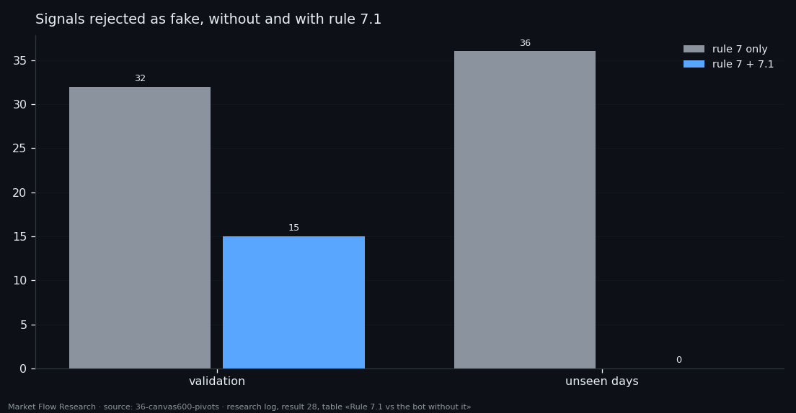
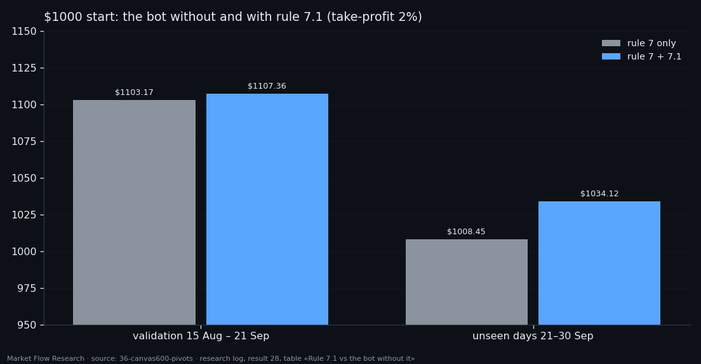

When a "Fake" Buy Signal Is Really a Deeper Bottom — Rule 7.1, Tested on Validation and Unseen Days
Our buy-only bot throws away a buy signal if price has not risen 2.3% since the previous signal — a repeat call inside the same dip is treated as fake. On the nine unseen days after validation that filter rejected 36 signals and left one trade. Rule 7.1 asks one more question before rejecting: did price, between the last peak and now, make a lower bottom within 1% of the current price? If so, the signal is real, and the take-profit is measured from that lower bottom. With the rule, fakes on unseen days fell from 36 to 0, trades rose from 1 to 3, and the result from $1008.45 to $1034.12.
① Rule 7: why the bot ignores repeat signals
The network marks bottoms, and a bottom is a place, not a moment: the signal keeps firing for hours while price grinds along the lows. After a trade closes, the next signal in the same dip would buy the same bottom twice. So rule 7: once the bot has a closed trade and no position, a signal is ignored if the highest close between the previous signal and this one is less than 2.3% above the current price. Price has to have left the area and come back before the bot buys again.
That works when a dip is one dip. It fails when the market makes a staircase down: a peak, a drop of more than 2.3%, a bottom, a small bounce — and a new signal a little above that bottom. Rule 7 measures from the wrong point and calls it fake.

② Rule 7.1: a lower bottom within 1%
The rule is checked only for a signal that rule 7 has already called fake, so it can only add trades, never remove them. Three points are found on the 100-second records between the previous signal and the current one: the peak — the highest close; the bottom — the lowest close after that peak; and the current price — the close at the signal.
If the peak is more than 2.3% above the bottom, the bottom is below the current price, and the current price is less than 1% above the bottom, the trade opens. Entry and stop are as usual (stop 2% below entry); the take-profit base is the bottom itself, or a lower price if one comes after entry: take = min(bottom, lowest price after entry) × 1.02. The idea comes from how a trader would read the chart — "the market already made its low a few hours ago, we are still near it" — and the target is smaller because the move has partly started.
③ Results: one more trade on validation, two more on unseen days
On validation (15.08–21.09) the rule turned one rejected signal into a trade: in at 78,863.46 on 7 September, bottom 78,713.21, out at take-profit on 9 September at 79,273.84, +0.38%. Trades went from 8 to 9, rejections from 32 to 15, money from $1103.17 to $1107.36.
On the unseen days (21.09–30.09) the effect was bigger: both the 25 and 29 September entries came through rule 7.1, at 83,811.35 above a bottom of 83,261.89 and at 83,258.01 above a bottom of 82,621.70. Trades went from 1 to 3, rejections from 36 to 0, money from $1008.45 to $1034.12. No trade in any run hit the stop.
The bot ships with a take-profit of 1.9% rather than 2%: same entries, earlier exits — $1100.85 on validation and $1032.92 on unseen days. Two cautions. The rule was written after looking at validation charts, so validation is not a fair test of it; the unseen days are, and there it added two trades out of two. And three trades are not a sample — the honest summary is "it did what it was designed to do, twice".

Reproduce this study
- Research log (.md, Ukrainian): goal, data, plan, scripts, every confirmed stage and table — enough to rerun the study
- Reproduction kit (.zip): the study's scripts, project rules and base scripts that build every class
- bot-line-7.0.md (.md, Ukrainian): the exported bot built from this study — model, signal, trade rules, how to rebuild it from raw data
If this changed how you read the tape, the natural next step is Volume Is the Fuel — Not the Steering Wheel — We recorded the Binance order book every second for six coins over five months and ran eighteen tests on what volume really does.
Volume Is the Fuel — Not the Steering Wheel
We recorded the Binance order book every second for six coins over five months and ran eighteen tests on what volume really does.
About Market Research Lab — What We Collect and Why
Most market commentary is storytelling.
From Calm to Calm: a Standard for What Counts as a Signal (BTC)
We stopped defining market signals with a stopwatch.
The Wall That Goes Quiet: What Resting Liquidity Predicts
We measured resting limit liquidity sitting on both sides of the book second by second across six coins, and asked the only question that matters:….
Comments
Discussion is powered by GitHub. Enable it by adding secrets/giscus.json (repo IDs from giscus.app).